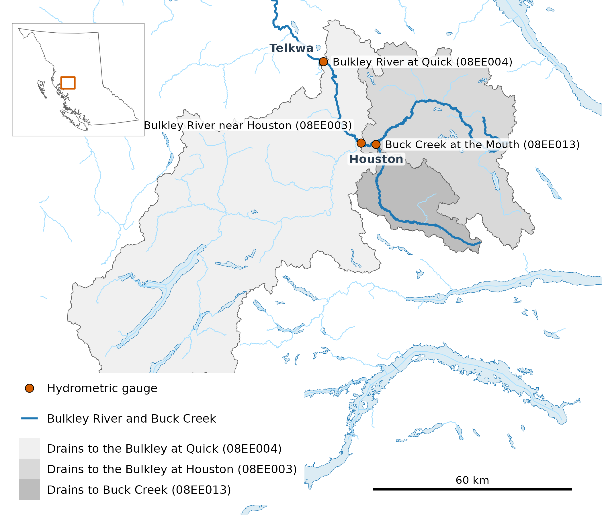
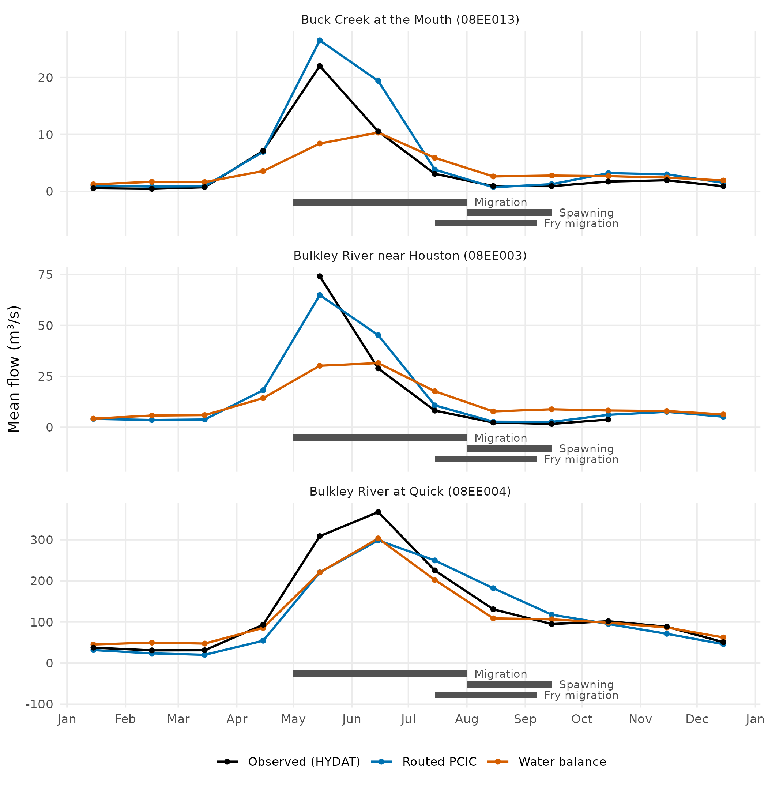
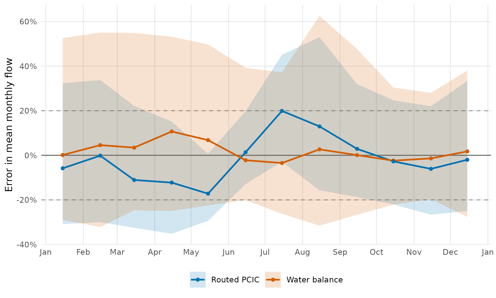

Whether a stream suits a fish depends on how much water runs through
it when the fish needs it: enough for adults to reach the spawning
grounds, to keep the redds covered through incubation, to carry the fry
out. Few streams in BC have a gauge to say. The R package wet
publishes an estimate for all of them: a mean flow for every stream
segment in the Freshwater Atlas, for the year and for each month, from
two sources (vignette("segment-discharge")). The point is
to let a biologist ask of any stream what flow a life stage meets,
compare streams on it, and ask the same question of another period or a
climate model’s future.
This article is about the months. It shows how to read them for one stream, draws them against the gauge record on the Bulkley River, and scores them at the gauges the water balance is built on. It ends with a narrower question: a life stage’s window starts and ends mid-month, so is a monthly mean fine enough to read its flow from, or are the published days needed?
What a month holds
Each source fills the twelve months its own way:
-
Routed PCIC (
pcic_routed) comes from the Pacific Climate Impacts Consortium (PCIC) at the University of Victoria, which runs the VIC-GL hydrologic model over BC on observed climate and routes the runoff down the river network with the Raven model (hydromosaic).fwapg(Norris 2026), PostgreSQL tools for the Freshwater Atlas, holds the Atlas’s stream network in a database; New Graph’s fork of it places PCIC’s river points on that network and gives each segment the flow accumulated in the sub-basins draining to it, plus a share of its own sub-basin’s runoff. The published value is the mean of each month’s daily flow over 1981–2010. Its annual value is the plain mean of the twelve months; weighting them by their days would move it by at most 0.4% on the segments below. -
The water balance (
wet_balance) is the annual flow over 1981–2010, split into months by the shares of the year carried by the five gauges most like the place (wet_share_fit()). Its months add up to its annual value exactly.
Neither is the gauge record.
Reading a segment’s twelve months
The months are public files on the web, and wet knows
where they are, so reading a stream takes its number and nothing else:
one stream is one linear_feature_id. The files are sorted
by watershed group, so naming the stream’s group as well lets duckdb skip everything
outside it, and the read takes seconds.
library(wet)
# Buck Creek at its mouth, where gauge 08EE013 sits
q <- wet_segment_monthly(NULL, 17094080, groups = "BULK")
# twelve months a column per source
reshape(q[q$month > 0, c("source", "month", "q_m3s")], idvar = "month",
timevar = "source", direction = "wide")wet_segment_monthly() reads those files through
duckdb, or the PostgreSQL table
wet_db_load() writes when it is given a connection. It
returns linear_feature_id, month, q_m3s, source, the shape
of wet_station_monthly()’s gauge record, so a comparison is
a join on month. A segment a source lacks comes back with
NA months, not missing rows.
The Bulkley at three gauges
Three gauges, one inside the next. Buck Creek joins the Bulkley at Houston; the Houston gauge sits just downstream and measures it too, and the Quick gauge, further down, drains the whole basin above. Buck Creek and Quick are among the gauges the water balance is built on. Houston is not: it reads only in open water and has no complete year in 1981–2010.
The Chinook windows are the weeks each life stage spends in these
rivers, as Gottesfeld and Rabnett (2007) give them for the Skeena:
adults migrating upstream from May 1 to Aug 1, spawning from Aug 1 to
Sep 15, and fry moving downstream from Jul 15 to Sep 7. The flow in a
window is the flow that life stage meets. The dates are a starting point
from the literature, not a fixed definition: timing differs between
streams and years, and the people who know a river may place a stage
differently. A window is a row in a table, a name with a start and an
end as month and day, and wet_flow_window() and
wet_window_stats() take any such table, so the same reading
runs for other dates, stages or species.

The three gauges and the land each one drains: Buck Creek at its mouth (567 km²), the Bulkley at Houston just downstream (2,315 km²), and the Bulkley at Quick (7,342 km²), which drains both.

Mean monthly flow on the three gauges’ segments from each source, beside the gauge’s observed monthly means over 1981–2010. At Bulkley River near Houston (08EE003), a seasonal gauge, only the months with 10 or more years of 20 days’ flow are drawn (May–October). The strips under each panel are the Chinook windows.
Buck Creek peaks in May, and so does routed PCIC, which overshoots it: its May–June flow is 23 m³/s against 16.4 at the gauge. At Quick, routed PCIC is about a quarter short in May–June (259 m³/s against 338) and high in July and August.
At Buck Creek and Quick the balance’s published months are in-sample: the gauge most like each of them is itself, so the balance there has the gauge’s own monthly pattern at the balance’s annual flow, about -12% and -9% in every month. The scores further down hold each gauge out instead. At Houston the balance is a true estimate for an ungauged site, and the gauge can check it only in open water.
Monthly error at the gauges
Monthly flow is scored at the 315 gauges the water balance is built on, against each gauge’s monthly means over its complete years in 1981–2010. The balance is scored held out: each gauge’s months come from a fit that never saw it or its neighbours. Routed PCIC is scored on the segment each gauge snapped to, at the 290 gauges whose segment has routed flow, less 11 where the segment carries under 20% of the gauge’s flow, which the annual comparison leaves out and attributes one by one; so 279 gauges.

Error in mean monthly flow by month: the median (line) and the middle half of gauges (band), as a percentage of the gauge’s 1981–2010 mean. The water balance is held out (blocked cross-validation) at 315 calibration gauges; routed PCIC at the 279 of them it covers. Dashed lines mark ±20%.
| Month | Balance median | Balance within ±20% | Routed median | Routed within ±20% |
|---|---|---|---|---|
| Jan | +1% | 43% | -6% | 34% |
| Feb | +2% | 41% | 0% | 34% |
| Mar | -1% | 42% | -11% | 33% |
| Apr | +7% | 35% | -12% | 35% |
| May | +4% | 38% | -17% | 39% |
| Jun | -3% | 45% | +1% | 61% |
| Jul | 0% | 40% | +20% | 38% |
| Aug | +2% | 34% | +13% | 36% |
| Sep | -1% | 36% | +3% | 44% |
| Oct | 0% | 45% | -3% | 44% |
| Nov | +1% | 47% | -6% | 41% |
| Dec | +1% | 44% | -2% | 38% |
The two sources err in different ways, and the figure shows both.
- The water balance is unbiased but imprecise. Its median error is within ±10% in every month, in winter too at the gauges routed PCIC does not reach, most of them in the Liard; but in no month are half the gauges within ±20%. Its months are an annual flow split by the shares of the year at the five gauges most like the place, matched on elevation, location and snow, and where a gauge’s flow peaks in May or June the balance more often falls short in that month than overshoots. This error is ours.
- Routed PCIC errs with the season: low in March and April, high in July and August, as if its melt started late and ran on. The shape holds at most of its gauges, not only at the median, so it is the model’s, not the placement’s: a misplaced outlet changes one gauge’s size, not the season at all of them. On the gauges both sources are scored at, it still has more within ±20% than the balance in 4 of the twelve months.
The table scores each source per gauge over its twelve monthly means and reports the median; its note says how to read the score. By basin size, the balance is the stronger source under 1,000 km² and routed PCIC above it. Routed PCIC is also the stronger at lake outlets, whose flow a lake holds back and releases later in the year: routing follows the lake, and the balance’s donor gauges are matched without regard to it.
| Group | Gauges | Balance | Rating | Routed | Rating |
|---|---|---|---|---|---|
| All gauges | 279 | 0.82 | very good | 0.82 | very good |
| <100 km² | 74 | 0.61 | satisfactory | 0.43 | unsatisfactory |
| 100-1000 | 105 | 0.82 | very good | 0.80 | very good |
| 1000-10000 | 82 | 0.87 | very good | 0.92 | very good |
| >10000 | 18 | 0.93 | very good | 0.95 | very good |
| Lake outlet | 17 | 0.73 | good | 0.92 | very good |
| Not a lake outlet | 262 | 0.82 | very good | 0.82 | very good |
| Nash–Sutcliffe efficiency (Nash and Sutcliffe 1970): how much closer a source’s twelve months come to the gauge’s than a flat line at the gauge’s annual mean. 1 is a perfect match; 0 is no closer than the flat line; below 0 the flat line would have been closer. | |||||
| Ratings follow Moriasi and others (2007): very good above 0.75, good 0.65 to 0.75, satisfactory 0.50 to 0.65, unsatisfactory below 0.50. |
Flow in the Chinook windows
The windows start and end mid-month, and a window taken from monthly means gives every day its month’s mean. How much that costs is the table’s “Months vs days” column, the gauge’s own monthly means against its own daily record, with no model involved. Where flow changes slowly within the month the cost is small: in migration and spawning the two agree within 3%. Fry migration takes the second half of July, when the freshet is receding, and there the monthly means overstate the gauge by about a quarter. The other columns ask whether each source’s published days recover that.
They do wherever a source’s daily pattern is right. Routed PCIC’s days fall through late July faster than the gauge’s, and its fry-migration error shrinks at both gauges. The balance’s days follow a pattern borrowed from the gauges most like the place. At Buck Creek that is Buck Creek itself, so its days fall with the gauge’s (21%, against the gauge’s 21%) and only its annual error remains. At Houston the borrowed pattern keeps more water into late summer: its days fall only 5%, and the balance stays several times the gauge in both late-summer windows. That error is ours. The table has the numbers.
| Gauge | Window | Years | Daily record | Monthly, day-weighted | Months vs days | Routed PCIC (months) | Routed PCIC (days) | Water balance (months) | Water balance (days) |
|---|---|---|---|---|---|---|---|---|---|
| Buck Creek at the Mouth (08EE013) | Migration (May 1 – Aug 1) | 30 | 11.7 | 11.7 | 0% | 16.4 (+40%) | 16.4 (+40%) | 10.4 (-11%) | 10.4 (-11%) |
| Spawning (Aug 1 – Sep 15) | 29 | 0.9 | 0.9 | +3% | 0.9 (0%) | 0.8 (-9%) | 0.8 (-9%) | 0.8 (-12%) | |
| Fry migration (Jul 15 – Sep 7) | 29 | 1.3 | 1.6 | +27% | 1.8 (+39%) | 1.2 (-7%) | 1.4 (+12%) | 1.1 (-12%) | |
| Bulkley River near Houston (08EE003) | Migration (May 1 – Aug 1) | 18 | 36.8 | 36.8 | 0% | 39.8 (+8%) | 39.8 (+8%) | 27.8 (-24%) | 27.9 (-24%) |
| Spawning (Aug 1 – Sep 15) | 18 | 2.1 | 2.1 | 0% | 2.7 (+29%) | 2.6 (+24%) | 12.0 (+470%) | 12.2 (+479%) | |
| Fry migration (Jul 15 – Sep 7) | 18 | 3.3 | 4.0 | +24% | 5.2 (+60%) | 3.9 (+21%) | 15.6 (+379%) | 14.8 (+356%) |
Limits
- On a calibration gauge’s own segment the published balance is in-sample: the gauge’s own monthly pattern at the balance’s annual flow (two gauges on one watershed, 08NM240 and 08NM241, share the mean of theirs). A watershed much like a gauge in elevation, location and snow gets almost the same pattern. The scores above hold each gauge out instead.
- Houston (08EE003) is seasonal: its monthly means cover May–October, from 19 of the years 1981–2010, and its windows rest on the years the table gives.
- A window from the published days is right only as far as the source’s daily pattern is: the balance’s is borrowed from gauges (the gauge’s own on its own segment), routed PCIC’s is its model’s. The scores above are of the months; the daily pattern is scored where it was fitted, not here.
- The scores are province-wide medians by month, split by basin size and lake outlets, not by region or season.
- Routed PCIC’s annual value is a plain mean of its months, so its months in millimetres do not add up to its annual runoff exactly.
Software and citation
Routed PCIC’s and the balance’s flows in this article are the
published product’s, read on 2026-10-22 from the build at
wet commit 77585a8. Before they were written, routed PCIC’s
months were held equal to the routed table in fwapg and its
days were routed again from the sub-basin days there, and the balance’s
months and days were made again from the fit at 08EE004 and 08EE013; the
build’s own check of its published flows, its
report, covers the rest. The gauges’ daily flows are HYDAT’s. The
scores compare routed PCIC as published, and the water balance held out
by its fit on HYDAT 2026-07-17, with HYDAT’s observed runoff.
-
wet0.4.18, doi:10.5281/zenodo.23305781. Irvine A (2026). wet: Stream Flow and Water Temperature for the BC Freshwater Atlas. New Graph Environment Ltd. doi:10.5281/zenodo.23305781 https://doi.org/10.5281/zenodo.23305781. Version 0.4.18, https://github.com/NewGraphEnvironment/wet. -
duckdb1.5.6. Mühleisen H, Raasveldt M (2026). duckdb: DBI Package for the DuckDB Database Management System. R package version 1.5.6, https://r.duckdb.org/. -
ggplot24.0.3. Wickham H (2016). ggplot2: Elegant Graphics for Data Analysis. Springer-Verlag New York. ISBN 978-3-319-24277-4. https://ggplot2.tidyverse.org. -
gq0.16.1, doi:10.5281/zenodo.23524719, commit367b562. Irvine A (2026). gq: Cartographic Style Management Across Rendering Targets. New Graph Environment Ltd. doi:10.5281/zenodo.23524719 https://doi.org/10.5281/zenodo.23524719. Version 0.16.1, https://github.com/NewGraphEnvironment/gq.
Cite wet by the DOI above, which resolves to its latest
release. How the balance is built: the
water balance method.
Data: routed flow from the Pacific Climate Impacts Consortium,
University of Victoria (hydromosaic: VIC-GL
hydrologic model output routed with Raven, PNWNAmet forcing), placed on
the Freshwater Atlas by New Graph’s fork of fwapg at commit
7c30f58; the stream network from the BC Freshwater Atlas through Norris,
S. (2026), fwapg: PostgreSQL tools for working with British
Columbia’s Freshwater Atlas, https://github.com/smnorris/fwapg; gauge records from
the Water Survey of Canada’s HYDAT, release 2026-07-17; for the balance,
1981–2010 climate normals from the R package climr, actual
evapotranspiration from CGIAR-CSI’s Global High-Resolution Soil-Water
Balance v3 (figshare
7707605) held no lower than a Fu–Budyko estimate, elevation from the
Copernicus GLO-90 DEM, ERA5-Land snow normals (Copernicus Climate Change
Service) through the R package cd for
its monthly shares, and the province’s BC Hydrologic Zones; the Chinook
windows from Gottesfeld, A. and Rabnett, K. (2007), Skeena Fish
Populations and their Habitat, Skeena Fisheries Commission; place
names from BC Geographic Names.
Scores: Nash, J.E. and Sutcliffe, J.V. (1970), River flow forecasting through conceptual models part I: a discussion of principles, Journal of Hydrology 10(3), 282–290, doi:10.1016/0022-1694(70)90255-6; Moriasi, D.N., Arnold, J.G., Van Liew, M.W., Bingner, R.L., Harmel, R.D. and Veith, T.L. (2007), Model evaluation guidelines for systematic quantification of accuracy in watershed simulations, Transactions of the ASABE 50(3), 885–900, doi:10.13031/2013.23153.